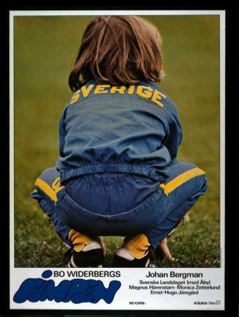

#8440 Fimpen, der Knirps
Alternativ: Stubby (Englischer Titel)
 
 IMDB-Wertung: 5.6 / 10
IMDB-Wertung: 5.6 / 10  Metascore: 0
Metascore: 0 
Six year old Johan, a.k.a. Fimpen, loves football. One day his talents are discovered. It doesn't take long before Fimpen gets to travel around with the national team. Fimpen becomes an idol and media wants a piece of him all the time. It gets hard to catch up in school.
Jahr: 1974
Dauer: 87 Minuten
FSK: 6
Land: Schweden Studio: MORE Music and MediaTonspuren:
Untertitel: Deutsch,
Auflösung: 1080p (1920x800) Größe: 4689 MB
Genre: Familie, Sport
Regisseur: Bo Widerberg
Drehbuch: Bo Widerberg
Soundtrack:
Darsteller:
- Magnus Härenstam als Mackan
- Monica Zetterlund als Teacher
- Ernst-Hugo Järegård als Club Official
- Carl Billquist als Principal
- Stig Ossian Ericson als Cab Driver
- Bengt Bedrup als TV Sports Commentator (uncredited)
- Ralf Edström als Football Player (uncredited)
- Ulf Elfving als Radio Commentator (uncredited)
- Arne Hegerfors als TV Sports Commentator (uncredited)
- Lennart Hyland als Radio Commentator (uncredited)
- Johan Bergman als Johan 'Fimpen' Bergman
- Liselott Wærum als Mackan's Fiancée
- Annelie Bergman als Johan's Sister
- Arne Bergman als Johan's Father
- Inger Bergman als Johan's Mother
- Roland Bergman als Football Player (uncredited)
- Claes Cronqvist als Football Player (uncredited)
- Georg 'Åby' Ericson als Football Coach (uncredited)
- Ove Grahn als Football Player (uncredited)
- Bengt Grive als TV Sports Commentator (uncredited)
- Ronnie Hellström als Football Player (uncredited)
- Bo Holmström als TV Commentator (uncredited)
- Kent Karlsson als Football Player (uncredited)
- Sören Karlsson als Guard at Råsunda (uncredited)
- Ove Kindvall als Football Player (uncredited)
- Krister Kristensson als Football Player (uncredited)
- Bosse Larsson als Football Player (uncredited)
- Sven Lindahl als TV Commentator (uncredited)
- Benno Magnusson als Football Player (uncredited)
- Roger Magnusson als Football Player (uncredited)
- Björn Nordqvist als Football Player (uncredited)
- Kenta Ohlsson als Football Player (uncredited)
- Janne Olsson als Football Player (uncredited)
- Örjan Persson als Football Player (uncredited)
- Roland Sandberg als Football Player (uncredited)
- Roger Scheibe als Johan's Friend (uncredited)
- Tom Turesson als Football Player (uncredited)
- Mats Werner als Football Player (uncredited)
Datei: X:\1974\Fimpen, der Knirps (1974, FSK6, 1920x800).mkv seit 05.03.2018
Festplatte: HD 1971-1979
 Es gibt insgesamt 33 Filme in der Gruppe '1974'
Es gibt insgesamt 33 Filme in der Gruppe '1974'